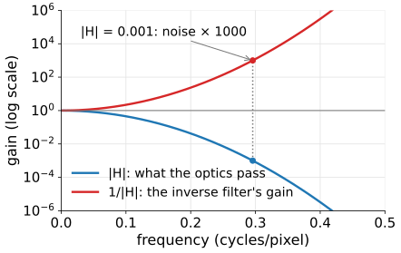
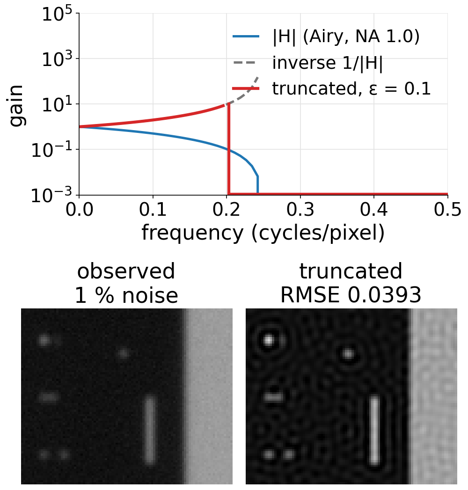
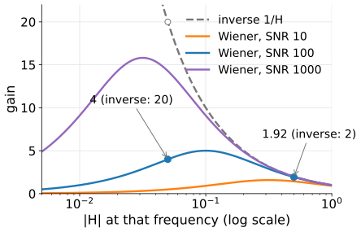
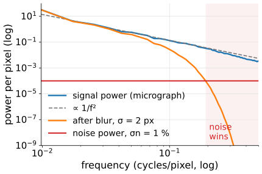
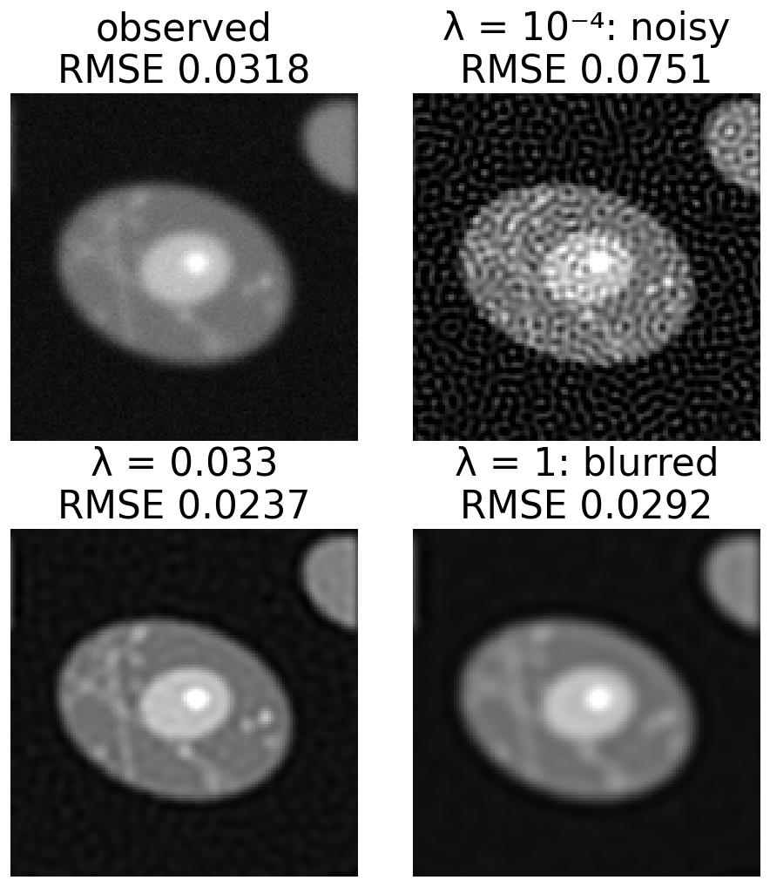
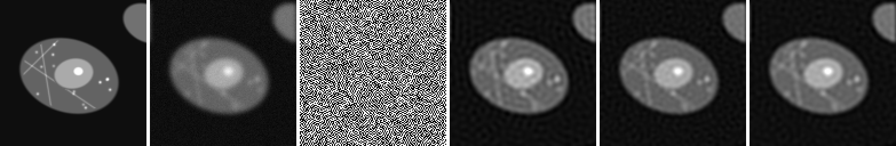
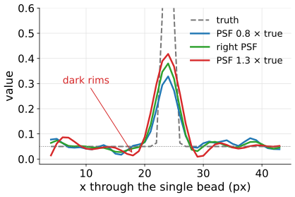
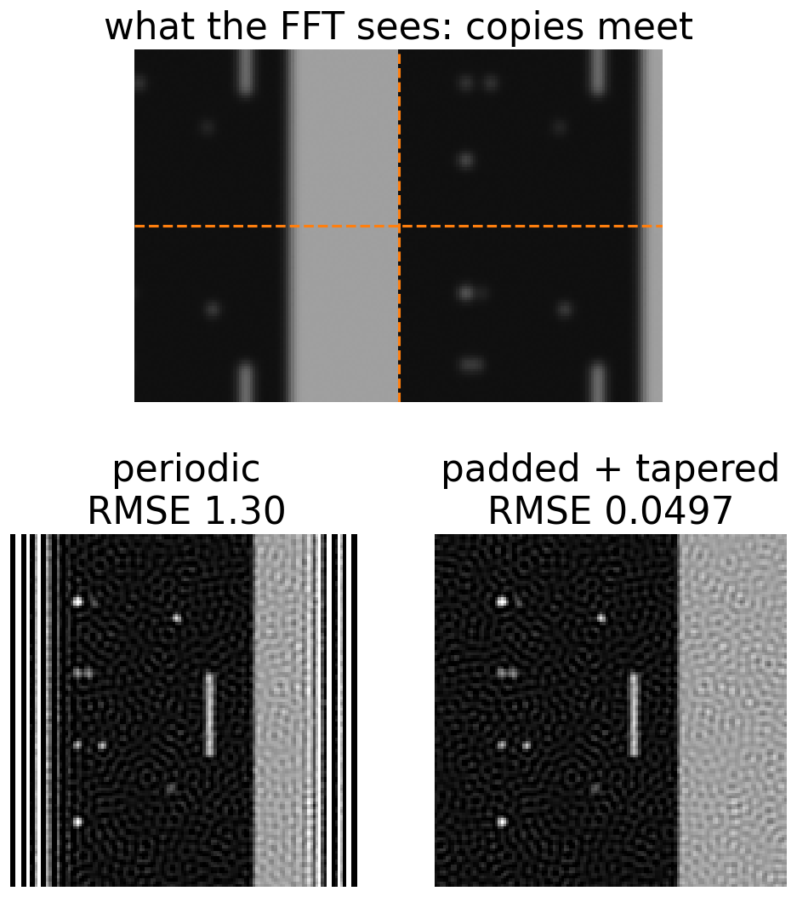

The image formation day ended with a problem: dividing by the transfer function undoes the blur exactly without noise, and explodes with it. Today’s answer, in three steps:
Give up where the data are hopeless: the truncated inverse.
Trust each frequency as much as its signal-to-noise ratio allows: the Wiener filter.
Say what we believe about the object as a penalty: Tikhonov regularisation.
Read every method as a gain curve, and predict the image from it.
Practicalities: the right PSF, and what the FFT does at the borders.
Slides titled The math give the formulas and proofs; the ideas are complete without them.
From the image formation day: the observed image is the object blurred by the PSF, plus noise, g = h \ast f + n. In Fourier space each frequency is multiplied by the OTF: G = H F + N.
Inverse filter: \hat F = G / H = F + N/H. Without noise: perfect.
Where |H| is small, N/H is huge: noise of 0.1 % at a frequency with |H| = 0.001 becomes 100 %.
Beyond the cut-off H = 0: there is nothing to divide by, and no method can bring those frequencies back.

The OTF of a Gaussian PSF (σ = 2 px) falls steeply; the inverse filter’s gain 1/|H| rises just as steeply. At 0.30 cycles/pixel |H| = 0.001 and the noise is multiplied by 1000.
What must we add? Knowledge about the noise and about the object. Today: how, and (next unit) how much.
Give up where the data are hopeless
Truncated inverse: divide only where |H| > \varepsilon; set every other frequency to 0.
The simplest regularisation: frequencies the optics barely pass are dropped, not amplified.
ε small: noisy (weak frequencies still amplified up to 1/\varepsilon). ε large: blurred (good frequencies dropped too).
Price: the cut in frequency is sharp, and a sharp cut in frequency is a sinc in space (the Fourier unit): ringing, ripples parallel to every edge and around every bright spot.
Example, ε = 0.1: gains 1/H for H = 1, 0.5, 0.2 are 1, 2, 5; for H = 0.1 and below the gain is 0.

Top: gains of the inverse (dashed) and the truncated inverse, ε = 0.1 (red), Airy PSF, NA 1.0. Bottom: beads, a bar and an edge with 1 % noise, before and after: rings and ripples.
(H^*: complex conjugate; for a symmetric PSF H is real and H^* = H).
Where signal ≫ noise (|H|^2 \gg 1/\mathrm{SNR}): W \approx 1/H, invert.
Where noise ≫ signal: W \approx H\cdot\mathrm{SNR} \to 0, damp.
In between a smooth roll-off: much less ringing than a sharp cut.

Gain against |H|: where |H| is large every Wiener curve follows the inverse; where |H| is small it falls back to 0. A higher SNR keeps inverting down to smaller |H|. The two marked points are the numbers below (SNR 100).
With SNR = 100: H = 0.5 gives 0.5/(0.25 + 0.01) = 1.92 (the inverse: 2). H = 0.05 gives 0.05/(0.0025 + 0.01) = 4 instead of 20.
The math: the Wiener filter
Model per frequency: G = HF + N with F and N independent, zero mean, powers S_f = E|F|^2 and S_n = E|N|^2. Find the linear estimate \hat F = WG with the smallest expected error:
E|F - WG|^2 = |1 - WH|^2 S_f + |W|^2 S_n .
Setting the derivative with respect to W^* to zero: -(1 - WH)H^* S_f + W S_n = 0, so
The error that remains at each frequency is \dfrac{S_f S_n}{|H|^2 S_f + S_n}: about S_n/|H|^2 where the signal dominates, and S_f (the whole signal is lost) where the noise dominates.
What Wiener needs to know
The filter needs the noise power and the signal power at every frequency.
Noise: the camera noise unit (day 3) showed how to measure it: σn from offset frames or a flat region. White noise has the same power S_n = \sigma_n^2 at every frequency (per pixel).
Signal: not known exactly; it is a model. Natural and microscope images have power falling roughly like 1/f^2: strong at low frequencies, weak at high ones.
So the SNR falls with frequency even where H does not. A flat model (one SNR for all frequencies) is a compromise: the best single value is the SNR at the frequencies that matter, not the image’s overall SNR.

Power per frequency of the cell micrograph (blue) falls roughly like 1/f² (dashed). After a Gaussian blur (σ = 2 px, orange) it drops below the noise of σn = 1 % (red) from about 0.19 cycles/pixel on: there the data are mostly noise. Micrograph: Robert M. Hunt, CC BY 3.0, via Wikimedia Commons.
Try it: Wiener and the gain curve
Fit the data, but not too wildly: Tikhonov
Choose the image x that minimises
\underbrace{\|A x - g\|^2}_{\text{misfit: blur } x\text{, compare with the data}} \;+\; \lambda\,\underbrace{\|D x\|^2}_{\text{penalty}}
Energy penalty (D = identity): prefer small values. Roughness penalty (D = the Laplacian of the filtering unit): prefer smooth images.
λ small: the misfit wins, noise is fitted: noisy. λ large: the penalty wins: blurred.
With the energy penalty Tikhonov is Wiener with a flat spectrum, \lambda = 1/\mathrm{SNR}. With the roughness penalty the damping grows with frequency, like Wiener with a 1/f^2 signal model.
The pattern “data term + λ · penalty” is the general recipe of regularisation (next unit).

Cell phantom, Gaussian blur σ = 2 px, 1 % noise, restored with the roughness penalty at three values of λ (RMSE against the truth).
The math: Tikhonov
Minimise \|A\mathbf x - \mathbf g\|^2 + \lambda\|D\mathbf x\|^2. The gradient is 2A^\top(A\mathbf x - \mathbf g) + 2\lambda D^\top D\mathbf x; setting it to zero gives the normal equations
(A^\top A + \lambda D^\top D)\,\mathbf x = A^\top \mathbf g .
For a circular blur and a circular D every matrix is diagonal in the Fourier basis (A \to H, A^\top \to H^*, D \to \hat D), so each frequency is solved on its own:
Equal to Wiener when \lambda|\hat D|^2 = S_n/S_f; energy penalty: \hat D = 1, so \lambda = 1/\mathrm{SNR}.
At f = 0 (H(0) = 1): energy penalty gain 1/(1 + \lambda), the mean shrinks. The Laplacian has \hat D(0) = 0 (it kills constants), so the roughness penalty has gain exactly 1 at f = 0: it keeps the mean.
A two-pixel blur by hand
The two-pixel blur of the image formation day: A = \begin{bmatrix} 0.75 & 0.25 \\ 0.25 & 0.75 \end{bmatrix}. It keeps the sum of the pixels (gain 1) and halves their difference (gain 0.5). Data \mathbf g = (1, 0.5): sum part (0.75, 0.75), difference part (0.25, -0.25).
Tikhonov with the energy penalty multiplies each part by s/(s^2 + \lambda) (s = its gain):
λ
sum gain
difference gain
\hat{\mathbf x}
0 (inverse)
1
2
(1.25, 0.25)
0.1
0.909
1.43
(1.04, 0.33)
1
0.5
0.4
(0.48, 0.28)
Larger λ: the difference is restored less (smoother), and the sum shrinks too (the energy penalty pulls everything towards 0).
Three ways to read a restoration

Cell phantom, Gaussian blur σ = 2 px, 1 % noise. From the left: truth, observed, inverse filter (noise explodes), truncated inverse ε = 0.15, Wiener SNR 45, Tikhonov with the roughness penalty λ = 0.033.
Gain curve|W(f)|: how much of each frequency the filter keeps or amplifies.
Effective transfer|W H|: what optics + restoration together pass. Wider than the optics alone, never beyond the cut-off.
The image: predict it from the curves. A gain peak at high frequencies means fine dots; a sharp drop means ringing; an early roll-off means blur.
Try it: Tikhonov, wrong PSF, borders
Practicalities: the PSF
The PSF must be right: about 20 % too wide gives over-sharpening, dark rims (halos) and ringing; too narrow leaves blur. Unit 3 treats this fully.
Sampled at least at Nyquist (the image formation day, resolution): otherwise the blur is not a convolution of the pixels you have.
Normalised to sum 1, so that the restoration keeps the total intensity.
Measured (beads) or computed; measured PSFs are noisy and need care.

A row through a single bead (Gaussian PSF σ = 2 px, 1 % noise), restored with Wiener (SNR 85) using a PSF 0.8, 1 and 1.3 times the true width. Too wide: a sharper peak but dark rims beside it, below the background of 0.05 (dotted).
Practicalities: borders
FFT methods treat the image as periodic: the right edge continues at the left.
A bright object at the right edge “leaks” to the left in the model, and a jump in brightness between the left and right edges looks like a sharp edge to restore: ringing stripes from the border inwards.
In the real image the blur came in from outside the field of view, which the periodic model cannot know.
Fix: pad the image (continue its edge values) and taper to the mean towards the middle of the padding, so the periodic copies meet smoothly; restore; crop. This is the “wrap” border rule of the filtering unit, and how to avoid it.

Beads and an edge whose scene continues past the border (0.1 % noise, Wiener SNR 10⁵). Top: copies of the image meet at the dashed lines. Bottom: restored with periodic borders (stripes) and padded + tapered.
Summary
The inverse filter 1/H is exact without noise and useless with it; beyond the cut-off nothing can be restored.
Truncated inverse: drop frequencies with |H| < \varepsilon; simple, but the sharp cut rings.
Wiener: gain H^*/(|H|^2 + 1/\mathrm{SNR}); inverts where the signal is strong, damps where noise dominates; needs a signal and noise model (1/f^2 is better than flat).
Tikhonov: minimise misfit + λ · penalty; energy penalty = Wiener with a flat spectrum; roughness penalty keeps the mean and damps high frequencies more.
Read a method by its gain curve and its effective transfer; predict the image from them.
Use the right PSF (sum 1, Nyquist), and pad and taper the borders.